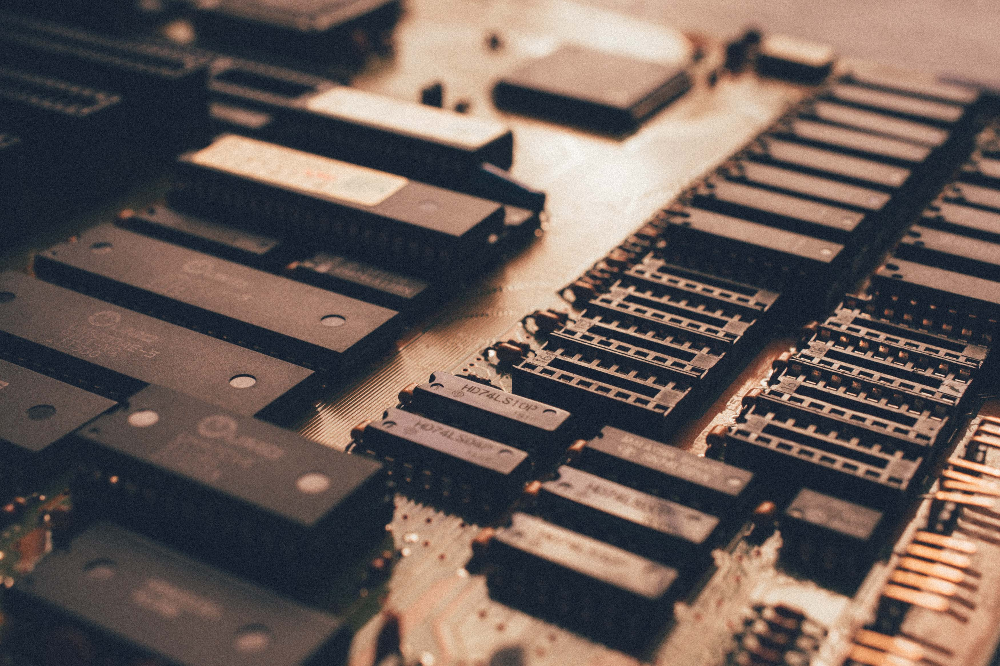

메인보드는 메인보드는 컴퓨터의 부품 중 하나로 컴퓨터의 혈관[1]이자 신경계[2]라고도 불린다. 주기판, 머더보드, 마더보드(motherboard)[3], 시스템보드(system board), 북미에선 mobo 등으로도 불리며 애플에서는 로직보드(logic board)라는 명칭으로 쓰이기도 한다. 
컴퓨터에는 CPU, 파워 서플라이, RAM, HDD등 수많은 부품이 들어 있다. 이러한 부품들이 서로 따로 놀 수는 없고, 각 부품들을 하나로 연결해주는 회로를 가지고 있으며 밖으로 신호를 보낼 수 있는 출력 포트를 가지고 있는 부품이 필요한데 이 기능들을 가지고 있는 부품이 메인보드이다.
보통 메인보드 제품명 순서는 제조사-칩셋-기타옵션이다. 한 예를 들자면 GA-H61M-DS2V는
GA(기가바이트)회사에서 만들었으며, H61 칩셋[4]을 사용하는 M-ATX사이즈의 메인보드이며,
DS2V 기본옵션이다. 기타 옵션은 DS2V, S2PV, D2V, HD3 등등이 있으며 DS2V가 가장 기본적이며,
HD3는 모든 옵션이 다 있는 제품이다.[5]
조립컴퓨터 견적에서 돈을 많이 쓰게 되는 부품 중 하나다. 오버클럭을 염두하지 않은 견적에서는
돈을 먹는 비중이 낮고, 오버클럭 견적에서는 비용 비중이 상대적으로 크다.[6][7]
파워 서플라이만큼이나 돈을 아끼지 말아야 하는 부품[8]으로, 어떻게 보면 파워
서플라이 이상으로 컴퓨터의 안정성을 좌우하는 부품이기 때문. 보드에 따라선 성능과
확장성을 좌우하기도 한다.[9]
파워는 파워 사망 이슈로 인해 파워에 돈을 아끼는 사람은 정말 조립컴퓨터에 무지한
사람이 아니면 그러지 않지만 메인보드는 그렇다할[10] 이슈가 없었기 때문에 메인보드에
돈을 아끼는게 만연한 실정이다. 다만 파워처럼 다른 부품과 함께 사망하는 경우는 별로 없으며,
메인보드 생산 회사가 싸구려 부품을 쓰지 않는 한 안정성이 체감할 수준으로 떨어지는 일은 드물다.
다만 저가 제품은 안정성에는 문제가 없더라도 수명이 짧을 수 있으니 주의. 그리고 교체가 가장
힘든 부품 중 하나며, 조립컴퓨터 업체에서 파워 서플라이와 더불어서 가장 많이 장난을 치는 부품이다.
일부러 저가 메인보드나 저가 파워 서플라이를 써서 컴퓨터 교체 주기를 빠르게 하려는 것인데,
앞서 말했듯이 파워 서플라이는 심장이고, 메인보드는 혈관 및 신경계이다. 사람으로 치면 극도로
중요한 부위인 것이다. 메인보드는 정말 웹서핑이랑 문서작업만 할 컴퓨터라 하더라도 안정성을 생각해서
아무리 적어도 6만 원 이상의 메인보드를 써야 한다. 조금이라도 고급 부품을 넣는다 치면 20만 원은 기본이다.
안정적인 사용을 원한다면 적어도 8에서 10만원 이상의 중급 메인보드 이상을 넣는 것을 추천한다. 사실 조금만
생각해봐도 굳이 컴퓨터가 아니라도 무언가를 굴리는 구성요소중 한 부품에 돈을 아끼기 위해 가격을 낮추는것
자체가 에러임을 견지하자.
오버클럭을 시도할 때 가장 세심하게 골라야 하는 부품이다. 메인보드에 따라서 난이도가 천차만별이기 때문.
그 다음으로 중요한 부품은 그래픽 카드.